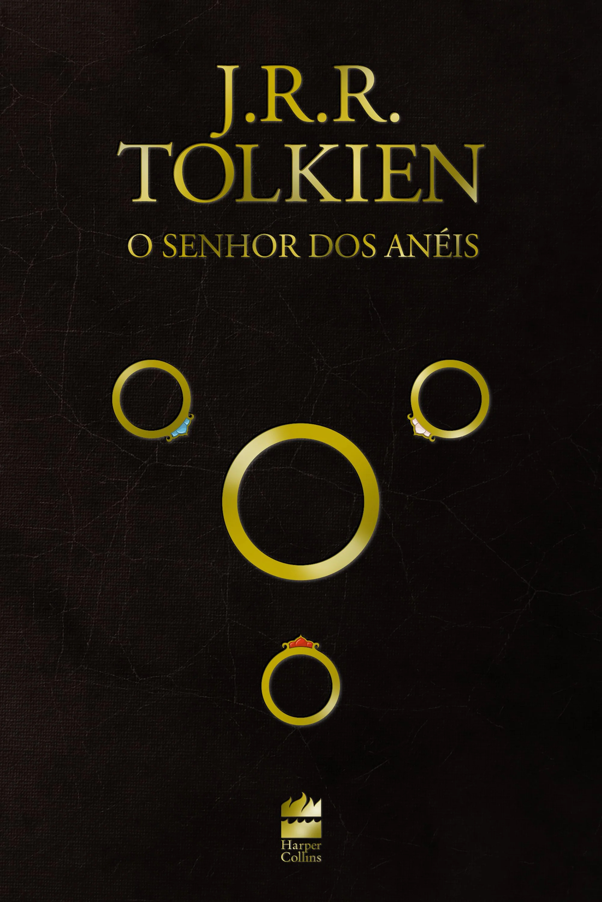

Livros de Ficção
1. Harry Potter

Harry Potter é uma série de livros escrita por J.K. Rowling, que segue a jornada de um jovem bruxo em sua luta contra o mal. A história começa quando Harry descobre que é um bruxo e é convidado a estudar na Escola de Magia e Bruxaria de Hogwarts.
2. O Senhor dos Anéis

O Senhor dos Anéis, de J.R.R. Tolkien, é uma épica saga de fantasia que narra a jornada de Frodo Bolseiro para destruir o Um Anel, um artefato poderoso que pode trazer a ruína ao mundo. A obra explora temas de amizade, coragem e sacrifício.
3. As Crônicas de Nárnia

As Crônicas de Nárnia, de C.S. Lewis, é uma série de sete livros que conta as aventuras de crianças que descobrem um mundo mágico chamado Nárnia, onde animais falam e a luta entre o bem e o mal é constante. A série é rica em simbolismo e alegorias.